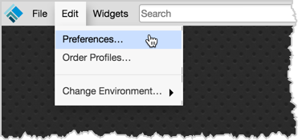

Each workspace includes preferences that allow you to customize workspace appearance and trading functionality. The settings apply to all widgets opened in your workspace unless you override the preferences in the widget's local settings.
To open the Preferences dialog, click Edit | Preferences from the workspace menu bar.

The Preferences dialog lets you make workspace customizations using the following tabs: